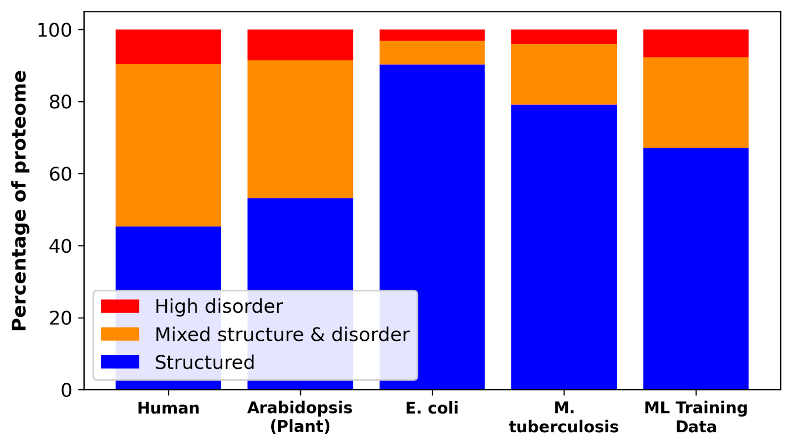
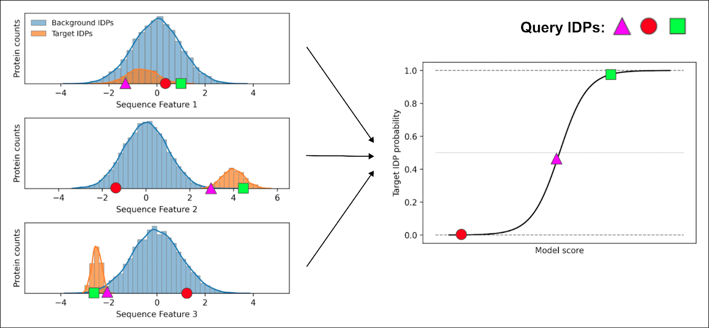
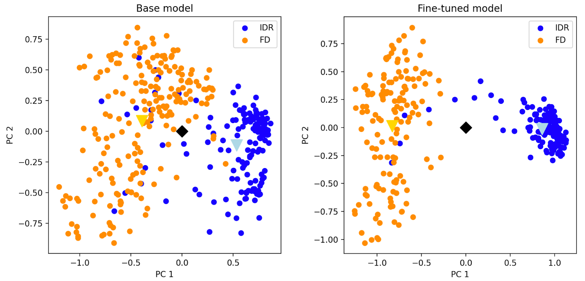

AI in Protein Research: Breakthroughs and Blind Spots
In parallel with advancements on general purpose large language models (LLMs), computational biologists have developed sophisticated AI tools to understand protein behavior.
These include task-specific tools like AlphaFold, for protein structure prediction, and versatile protein language models (pLMs) like ESM.
Unfortunately, these models, like biochemistry more broadly, misunderstand an important class of functional proteins: intrinsically disordered proteins (IDPs).
Foundations for a new era in computational biology
Like most domains, AI has rapidly transformed protein biochemistry. Experiments that once required a 5+ year PhD thesis can now be run in minutes on a laptop. Ask any structural biologist: no more endless construct design, tedious protein purification, or perpetual crystallization trials. Instead, enter your protein sequence into AlphaFold and solve its structure while you have a coffee.
These breakthroughs were only recently made possible by:
- Better hardware, including more powerful and cheaper GPUs
- Foundation models for protein sequence-based tasks
- High quality, large, open-access data, including the Protein Data Bank and UniProt
AlphaFold has best exemplified what is possible on this foundation. Published in 2020, it was the first protein structure prediction model to use deep learning. Updates in 2021 and 2024 improved its accuracy and extended its prediction capabilities to biomolecular interactions.
The holy grail of biochemistry seemed within reach: we could understand the function of any protein with atomic resolution. This is because most scientists mistakenly believe that the function of a protein depends on its 3D shape.
Of course, IDPs also perform essential functions despite lacking stable 3D structures. AlphaFold is poorly suited for them, often introducing artificial structural order in its predictions.
Protein language models (pLMs) are the next frontier for deep learning protein models. They "learn" the universal laws of proteins directly from sequence, without requiring additional experimental data inputs. As LLMs understand natural language by connecting words, pLMs understand proteins by connecting non-obvious, yet statistically significant sequence patterns. Foundation pLMs like ESM2 and ProtT5 infuse deeper background knowledge into tasks, including the prediction of protein structure, stability, or subcellular localization.
In theory, this should make pLMs a useful tool to study all proteins.
IDPs pose unique challenges for deep learning
State-of-the-art pLMs also struggle with IDPs. IDPs pose three fundamental challenges for deep learning. Compared to folded proteins, IDPs have:
- Less training data
- Lower sequence conservation
- More obscure sequence-to-function relationships
1. IDPs have less available training data
High-quality sequence and experimental data is scarce for IDPs, leading to models' poor performance on IDP-related tasks. Consider how LLMs perform worse on problems posed in less-common languages.
Less than 20% of proteins in microorganisms are fully- or partially-disordered, yet microbial proteins account for 2 in 3 UniProt entries. In multicellular organisms, up to 45% of proteins are fully- or partially-disordered. Consequently, IDPs are severely under-represented in PLM training sets.

Beyond sequence repositories, the open-source Protein Data Bank is a cornerstone of deep learning model development. It is a curated database containing >200,000 experimentally-determined protein structures that is used across training, validation, and fine-tuning.
No such ground-truth experimental databases exist for IDPs.
2. IDPs have lower sequence conservation
Proteins are linear strings of amino acids. Folded proteins from related species often share the exact order of amino acids, while the sequence of IDPs from those same species can vary significantly. This holds true even for essential proteins with both folded and disordered domains. The low sequence conservation of IDPs makes it more difficult for deep learning models to extract meaningful patterns across species.
This low sequence conservation manifests in two ways: more total, and fewer correlated amino acid mutations than folded proteins. Any given pair of mutations is likely random in IDPs, whereas pairwise mutations often reveal profound insights into folded proteins. This means that disordered domains have a lower signal-to-noise ratio than folded domains.
3. IDPs have more obscure sequence-to-function relationships
The fixed structures of folded proteins often determine their functions. Enzymes have a pocket that binds a specific substrate. The geometry of the binding pocket and the spatial arrangement of catalytic residues dictates the substrate specificity and chemical activity. These functional and structural signatures are reflected in enzyme sequence and can be learned by pLMs.
Such a direct sequence-structure-function link doesn't apply to IDPs. Their biological purposes stem from constant shape shifting and environmental responsiveness. The hallmark of IDPs is that they engage in multiple, weak interactions with other biomolecules that continuously form and break.
Compared to folded proteins, functional signatures are thus "fuzzy" in IDPs. This makes it much harder for pLMs to identify functionally-relevant sequence motifs and patterns.
Our approach: feature-based models and customized pLMs
The inherent dynamism of IDPs requires a fundamental rethinking of how we develop protein AI models, from training data to model evaluation. At Prose Foods, we combine two approaches to account for these unique challenges.
Sequence features, not just primary sequence
Before founding Prose Foods, we showed that the behavior and function of IDPs is encoded in conserved high-order patterns than primary amino acid sequence. This finding broke with the established paradigm that protein function is intimately linked to the exact order of adjacent amino acids.
Two categories of sequence patterns define IDP behavior:
- Compositional features describe the types and frequency of amino acids within a sequence, irrespective of their order. For example, the proportion of positively and negatively charged amino acids.
- Distributional features account for the order and arrangement of amino acids along a protein. Examples include the patterning of hydrophobic or polar, uncharged amino acids.
Since we already know which features are important for IDP behavior and function, we use them directly in custom discriminative models (rather than hope that pLMs learned them from scratch and encoded them in embeddings). Our models are directed to learn the most relevant sequence features for a specific target functionality.
To accomplish this, we curate class(es) of protein sequences with the desired functionality. We then calculate the distribution of 1,000+ higher-order sequence features in the target class and a background class of random IDPs.
Next, we train ML classifiers to learn which features best describe the target class based on these distributions. It does so by assigning individual weights to each sequence feature. When we query the model with a candidate protein sequence, it calculates the probability that the query has the target functionality.

Only the square exhibits features consistent with the target class for every feature, giving it the highest probability of possessing that same functionality.
By focusing only on biologically-relevant sequence features, we create interpretable models and minimize overfitting. The learned weights directly quantify the importance of each feature, providing meaningful insights into the underlying biochemistry, and the protein's actual performance in the kitchen.
Adapting PLMs to better focus on IDPs
In parallel to our discriminative models, we adapt foundation pLMs to IDP-specific tasks. Deep learning can uncover universal rules that have evaded IDP researchers. However, this requires correcting the flaws that foundation models face with IDPs.
We begin by fine-tuning open-source pLMs on custom datasets, curated to better represent the entire IDP sequence space. This targeted training corrects the inherent bias of foundation models, compelling them to learn the specific principles governing disordered regions.
We monitor this process to confirm the model is learning about IDPs without "forgetting" its knowledge of structured proteins. Throughout the training, we track key performance metrics (e.g., perplexity, mask prediction accuracy) on separate validation sets for both protein types, ensuring targeted improvement without compromising general performance.
Fine-tuned models are then validated to confirm their enhanced capabilities. These tests verify that the models can identify similar IDPs, take disordered regions into account during protein clustering, and more accurately predict IDP properties like chain dimensions.
Another neat way to demonstrate model improvement is to compare the per-residue embeddings of a protein with both folded (FD) and disordered (IDR) regions. Principal component analysis of the embeddings shows that our fine-tuned model produces a more compact and distinct cluster for the IDR (indicating a more consistent representation than the base model). This shows that the model has learned to distinguish between structured and disordered domains. It no longer over-indexes on structural features that are irrelevant to the function of disordered regions.

We use our fine-tuned model to generate custom embeddings that we then use as features for classifiers that group proteins according to their function in food. We focus on functions that shape the taste and texture of food, such as the ability to form cheese curds with fats at low pH or chewy bread crumbs with starches during baking.
Conclusion
While AI has revolutionized protein research, state-of-the-art models often overlook or struggle with IDPs. This is a major hurdle to developing better food ingredients.
At Prose Foods, we overcome these hurdles by building next-generation AI tools specifically designed to understand and utilize IDPs. This allows us to bring natural, clean-label food ingredients with advanced functionalities to the table.